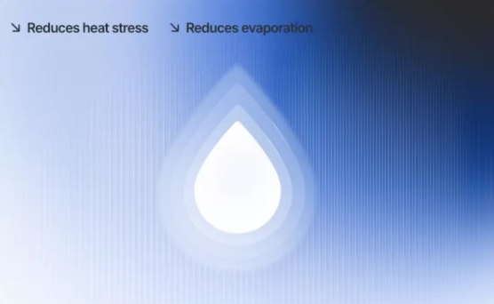
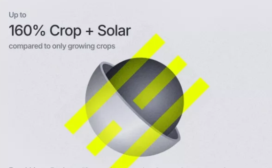

Ползи
Какво предлагаме за вашата нива?
Създаване на микроклимат. Слънчевите панели осигуряват частична сянка
на културите под тях, създавайки микроклимат, който потенциално
удължава вегетационния период. Това може да помогне на растенията да
преживеят по-топлите месеци и да намали стреса от високи температури.


Двойна употреба. Чрез инсталиране на слънчеви панели над културите
една и съща земя може да произвежда едновременно храна и енергия, като
използва ресурсите в пълния им потенциал. Комбинирането производство
на храна и възобновяема енергия прави този модел ефективен за
бъдещето.
Поставянето на слънчеви панели върху нивите намалява ерозията на
почвата, като предотвратява директното въздействие на вятъра и
дъждовете върху земята, което допринася за запазване на почвеното
плодородие и устойчивост на екосистемата.